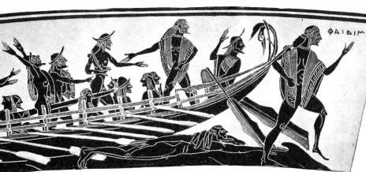

|
Estilos
Olimpiadas Michael Phelps |
Origen e inicios de la nataciónEl origen de la natación es ancestral y se tiene prueba de ello a través del estudio de las más antiguas civilizaciones. El dominio de la natación, del agua, forma parte de la adaptación humana desde que los primeros homínidos se transformaron en bípedos y dominaran la superficie terrestre. Ya entre los egipcios el arte de nadar era uno de los aspectos más elementales de la educación pública, así como el conocimiento de los beneficios terapéuticos del agua, lo cual quedó reflejado en algunos jeroglíficos que datan del 2500 antes de Cristo. En Grecia y Roma antiguas se nadaba como parte del entrenamiento militar, incluso el saber nadar proporcionaba una cierta distinción social ya que cuando se quería llamar inculto o analfabeto a alguien se le decía que "no sabe ni nadar ni leer". Pero saber nadar como táctica militar no se limita a las antiguas Grecia y Roma, sino que se conservó hasta las épocas actuales, pues es conocido que durante la Segunda Guerra Mundial se desarrollaron técnicas de enseñanza para las tropas combatientes. Se tienen indicios de que fueron los japoneses quienes primero celebraron pruebas anuales de natación en sentido competitivo, en tiempos del emperador Sugiu en el año 38 antes de Cristo. Los fenicios, grandes navegantes y comerciantes, formaban equipos de nadadores para sus viajes en el caso de naufragios con el fin de rescatar mercancías y pasajeros. Estos equipos también tenían la función de mantener libre de obstáculos los accesos portuarios para permitir la entrada de los barcos a los puertos. Otros pueblos, como los egipcios, etruscos, romanos y griegos, nos han dejado una buena prueba de lo que significaba para ellos el agua en diversas construcciones de piscinas artificiales. Sin embargo, el auge de esta actividad física decayó en la Edad Media, particularmente en Europa, cuando introducirse en el agua era relacionado con las enfermedades epidémicas que entonces azotaban. Pero esto cambió a partir del siglo XIX, y desde entonces la natación ha venido a ser una de las mejores actividades físicas, además de servir como terapia y método de supervivencia.  |